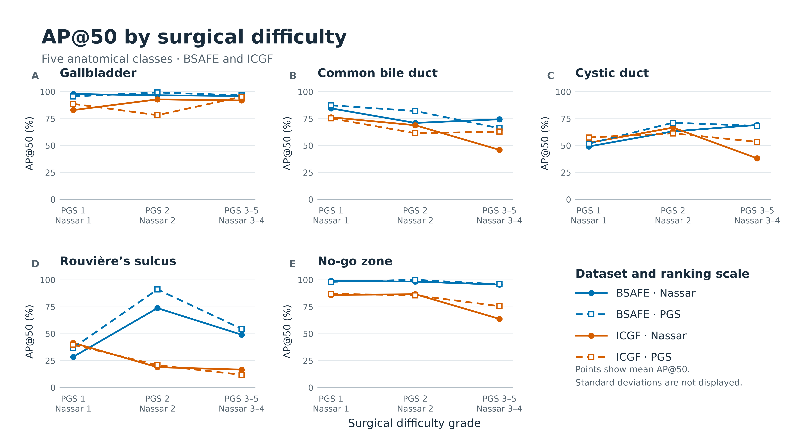
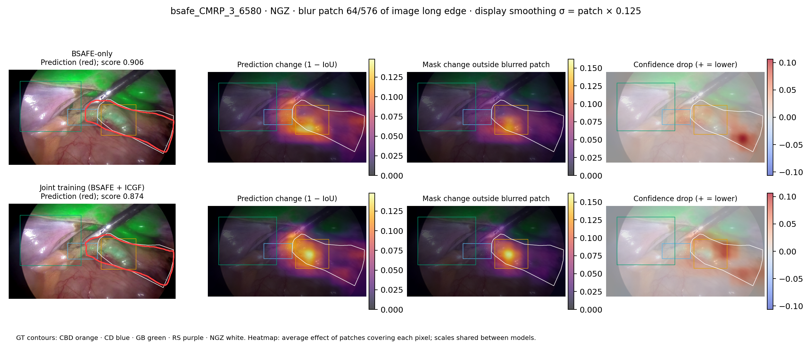
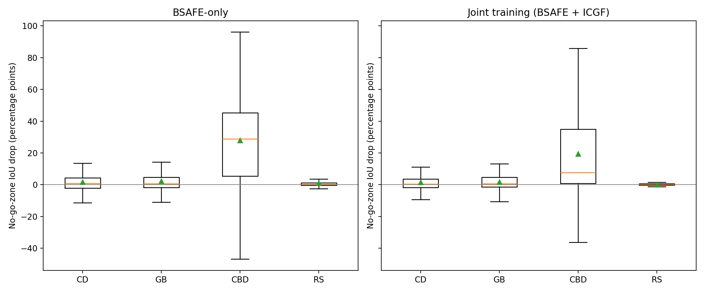
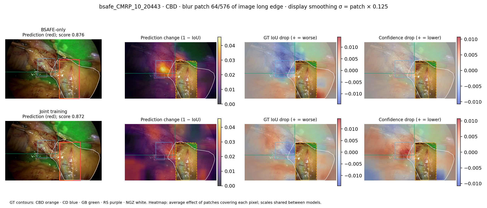
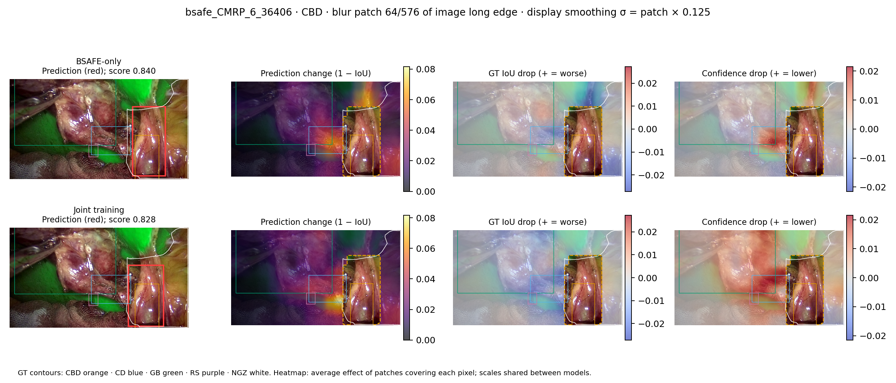
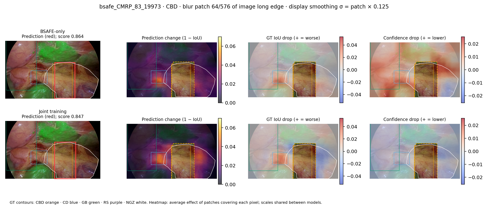

Meeting CAMMA
Luc / Shih-Min / Pietro / Nicolas
Agenda
RF-DETR performance interpretability Next project: annotation densification
1.1. Performance by surgical difficulty

Source: assets/metrics_per_surgical_difficulty.csv and assets/ap50_by_surgical_difficulty.png. The chart does not identify the training regime, so do not describe it as a controlled comparison of BSAFE-only versus joint training. Mean AP@50 is in percent. ICGF CBD under Nassar: 76.21, 68.84, 45.96, with 13, 14, 4 eligible videos. ICGF Rouvière's sulcus under PGS: 39.79, 20.71, 11.82, with 13, 4, 5 eligible videos. BSAFE gallbladder and no-go zone remain above 95 mean AP@50 in every group. Other classes do not show a uniform monotonic trend. Grade groups overlap across the two grading systems. SDs are available in the CSV, not shown on the plot. These are associations, not evidence of a causal effect of surgical difficulty.
1.2. Spatial blur sensitivity
Question: which image regions affect CBD localization and no-go-zone segmentation?Compare BSAFE-only and joint training (BSAFE + ICGF). Blur local patches and measure prediction change, GT overlap and confidence. Interpretation: sensitivity to a perturbation, with possible effects of blur artifacts and overlapping anatomy.Method source: /home/lucvedrenne/Documents/PostDoc/Outputs/2026.11/render_smoothed.py. The displayed local maps use patch side 64/576 of the image long edge and display smoothing sigma = patch side × 0.125. The method matches target-class predictions by confidence × overlap with the reference box, and skips missing or low-confidence baselines. CBD protected areas combine GT and both models' valid baseline boxes, dilated by a configured margin. No-go-zone maps do not protect the CBD. Prediction change = 1 − IoU with the original prediction. GT IoU drop = original minus perturbed GT IoU. Confidence drop = original minus perturbed score. For no-go masks the third column measures change outside the blurred patch. Heatmaps average the effect of overlapping patches at each pixel. Scales are shared between models within a figure, not necessarily between figures. Separate structure-box blurring is shown later.
1.4. No-go-zone sensitivity

Blurring near the CBD changes the no-go mask beyond the blurred patch. Source: assets/bsafe_CMRP_3_6580_no_go_zone_64.png and render_smoothed.py. Third column: 1 − mask IoU outside the changed pixels, relative to the baseline prediction. This is a qualitative example, not proof of anatomical reasoning.
1.5. Structure-box blur

Mean no-go-zone IoU drop after CBD blur: 28.00 pp (BSAFE-only), 19.51 pp (joint).919 frames across 15 videos. Other structure means are at most 2.28 pp. Sources: assets/iou_drop.png and assets/iou_drop_table.png. Positive drop means worse segmentation. Only frames with positive no-go-zone GT are included. Baseline and blurred means use the same available-structure frames within each row. CBD medians: 28.78 and 7.72 percentage points. CBD mean baseline/blurred IoU: 0.7934/0.5134 (BSAFE-only), 0.7945/0.5994 (joint). Different structures have different frame subsets and box sizes. Frames are correlated within videos. This supports sensitivity to the CBD region under this intervention, not a causal anatomical mechanism or a statistically established advantage. Control region size, overlap and perturbation strength before comparing structures. Full source table in backup.
2. Annotation densification
Setup: sparse annotations along video sequences
Track boxes, masks and lines between regularly annotated frames. Use the annotations on both sides of each interval for bidirectional tracking . Few objects, mostly one instance per class, simplify identity association. Detection remains difficult: subtle anatomy and changing ICG appearance. Goal: produce dense candidate annotations with uncertainty for review.Project setup and goal supplied by Luc. Regular means recurring annotations, not an assumed fixed time interval. Bidirectional tracking is an offline setting using both endpoint annotations. Do not assume single-instance classes never have exceptions. No model results are claimed for this proposed project.
2. Representation and tracking
Proposed model
Raw surgical videos: learn representations with video self-supervision.First baseline: reuse our internal surgical DINO encoder.Add temporal query propagation and annotation conditioning, inspired by VidEoMT. Predict geometry with outputs for boxes, masks and lines. Propagate from both annotated endpoints, then compare predictions within the interval. Reference: VidEoMT, Norouzi et al., 2026
User proposal, with architecture details proposed for discussion. Source: https://arxiv.org/abs/2602.17807 . VidEoMT performs online video segmentation with a plain ViT, propagating object queries from the previous frame and fusing them with learned temporally agnostic queries. It does not require a separate dedicated tracking module. Annotation conditioning, bidirectional inference, line outputs and uncertainty estimation are proposed extensions here, not capabilities established by that paper. Internal surgical DINO is the available starting encoder, not an assertion that we already have a video-pretrained model.
2. Explicit uncertainty
Forward vs backward: compare tracks seeded from opposite annotations.Conditional vs unconditional: compare annotation-conditioned tracking with detection without annotation prompts.Temporal consistency: flag abrupt changes, disappearance and unstable geometry.Proposed uncertainty signals, not validated estimators. “Unconditional” means no annotation prompt or track history, while still observing the image/video. Compare same-class boxes with IoU, masks with overlap or boundary metrics, and lines with a suitable normalized geometric distance. Low disagreement can occur when both directions make the same error. Hold out complete videos and hide evaluation annotations from both tracking seeds and training. Fit acceptance thresholds on validation videos and report error versus accepted coverage on separate test videos. Distinguish actual absence from uncertain visibility.
2. Video self-supervision
Internal surgical DINO first, V-JEPA 2.1 next
Immediate baseline: build tracking on the surgical representation we already have.Candidate: V-JEPA 2.1 learns dense video features with improved temporal consistency.Hypothesis: predictive video features may help maintain anatomy through appearance changes, including ICG.Compare backbones with the same tracking head, annotation spacing and held-out videos. V-JEPA 2.1, Mur-Labadia et al., 2026
Sources: https://arxiv.org/abs/2603.14482 and https://github.com/facebookresearch/vjepa2 . V-JEPA 2.1 targets high-quality dense features with dense predictive loss, supervision at intermediate layers and image/video tokenizers. This motivates testing its encoder for tracking, but does not establish surgical or ICG robustness. The world-model direction refers to predictive latent representations from video. V-JEPA 2-AC is the separate action-conditioned robotics model. We do not propose robot-action conditioning here. Raw surgical-video adaptation is a proposed subsequent stage, with split boundaries fixed before pretraining to keep the evaluation clean.
2. First experiments and discussion
Hide intermediate annotations and reconstruct them from the surrounding anchors. Compare framewise detection, forward tracking and bidirectional tracking. Vary annotation spacing and evaluate errors during ICG appearance changes. Report geometry quality, accepted annotation coverage and manual correction effort. Proposed evaluation plan for discussion. Use held-out videos and keep hidden evaluation labels out of conditioning. Evaluate boxes, masks and lines with metrics appropriate to each geometry. Compare at the same accepted coverage and include per-video uncertainty estimates. Review effort should be measured rather than assumed. The objective is useful annotation densification, not only higher framewise accuracy. No timeline or compute commitment is assumed.
Backup: CBD context

CBD protected. Context sensitivity differs between the two models in this frame.CMRP 10 / 20443. Scales are shared within this figure, not across examples. Source: assets/bsafe_CMRP_10_20443_common_bile_duct_64.png. Qualitative example, not a population-level model comparison. Patch side 64/576 of the long edge. Display smoothing sigma = patch × 0.125. White/no-heatmap protected region does not imply zero sensitivity.
Backup: CBD context

CBD protected. Nearby context can alter the predicted box even when CBD pixels stay fixed.CMRP 6 / 36406. Scales are shared within this figure, not across examples. Source: assets/bsafe_CMRP_6_36406_common_bile_duct_64.png. Qualitative example, not a population-level model comparison. Patch side 64/576 of the long edge. Display smoothing sigma = patch × 0.125. White/no-heatmap protected region does not imply zero sensitivity.
Backup: CBD context

CBD protected. Localization and confidence responses need separate interpretation.CMRP 83 / 19973. Scales are shared within this figure, not across examples. Source: assets/bsafe_CMRP_83_19973_common_bile_duct_64.png. Qualitative example, not a population-level model comparison. Patch side 64/576 of the long edge. Display smoothing sigma = patch × 0.125. White/no-heatmap protected region does not imply zero sensitivity.
Backup: structure-box blur results
Blurred structure Frames / videos BSAFE-only Joint
Cystic duct 417 / 15 1.74 1.48 Gallbladder 1,015 / 15 2.28 1.80 Common bile duct 919 / 15 28.00 19.51 Rouvière’s sulcus 300 / 14 0.98 0.18
Mean no-go-zone IoU drop in percentage points.
Each row uses its own available-structure frame subset.
Full source table with original / blurred IoU and medians
All numbers transcribed from assets/iou_drop_table.png. Models in source table: segment_bsafe and segment_joint. Positive no-go-zone GT frames only. The same frames support baseline and blurred means within each model/structure row. Frame counts are not independent-video counts. No significance test was supplied.